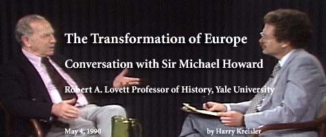

Conversations with History: Institute of International Studies, UC Berkeley
|
See
the See a webcast of this interview: |
 |
This interview is part of the Institute's "Conversations with History" series, and uses Internet technology to share with the public Berkeley's distinction as a global forum for ideas.
British military historian Sir Michael Howard discusses European changes with Harry Kreisler, host of Conversations with History, in this 1990 interview.
© Copyright 2004, Regents of the University of California
Site Manager: Letitia Carper; email site-mgr at globetrotter.berkeley.edu.